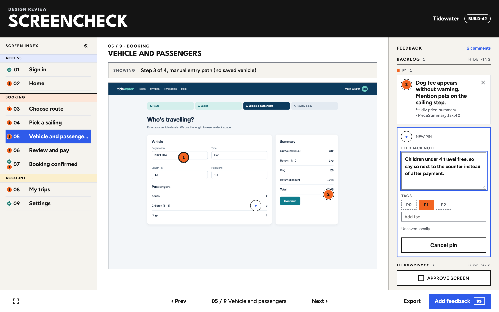
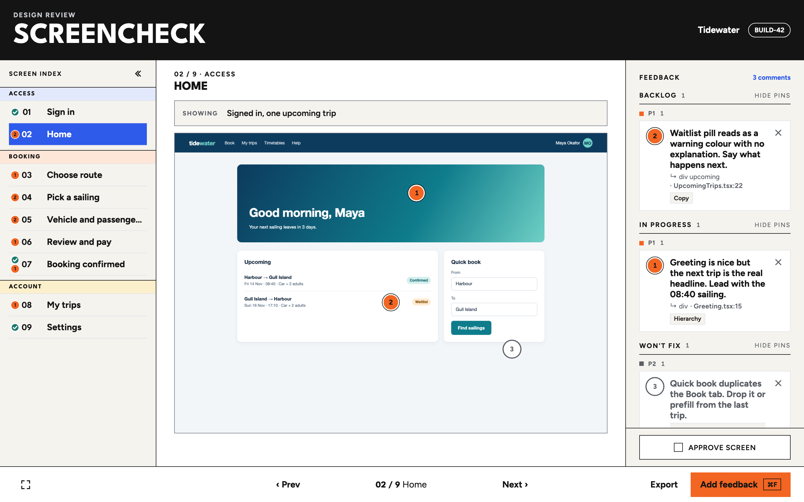
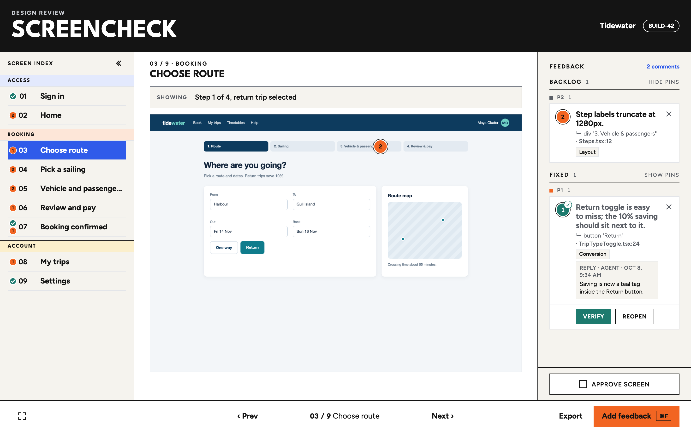
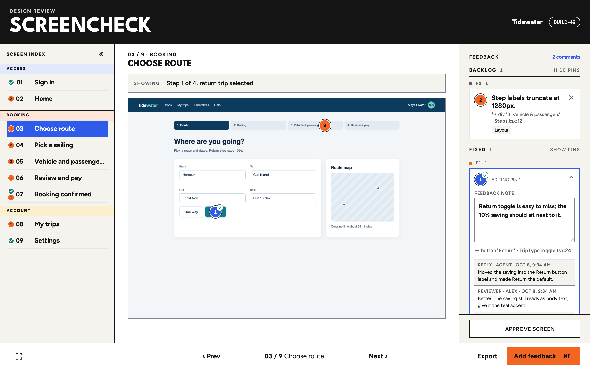
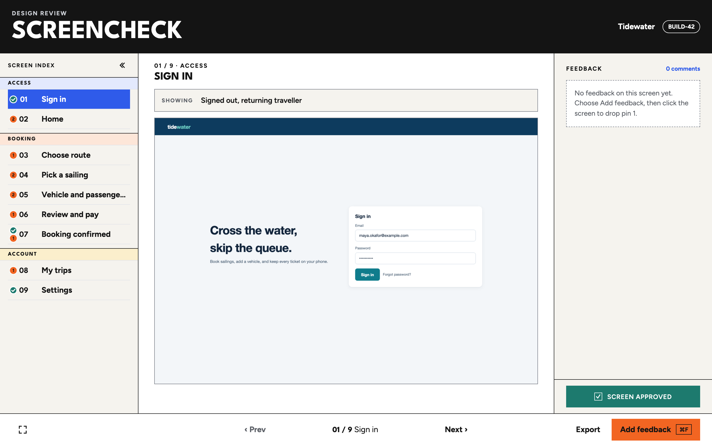
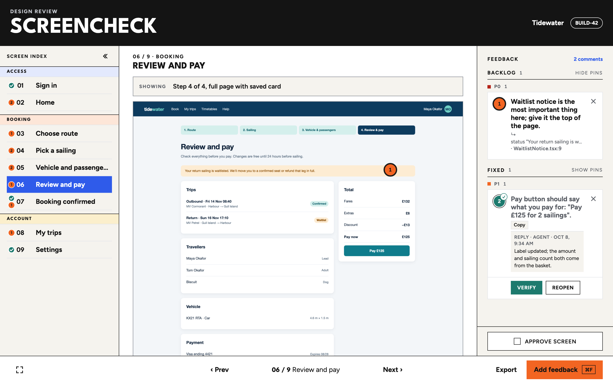
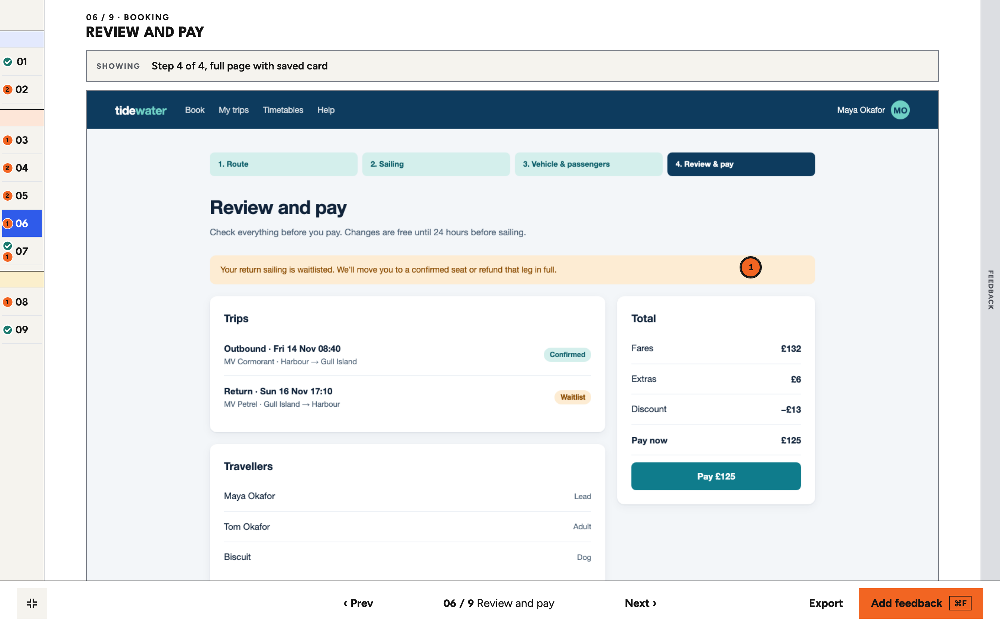
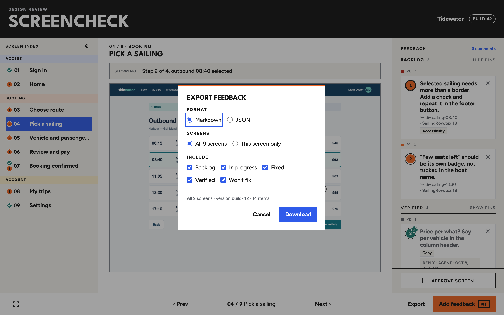

Design review on localhost
Pin feedback to the screen it's about.
Capture every screen of your app, drop numbered pins where the problems are, and approve screens one by one. When an agent fixes a pin, it says what it changed, right on the card, and you verify it.
Screenshots in chat lose their place.
One place per screen
Every screen gets a number, a capture and its own comments. "Screen 4, pin 2" means the same thing to everyone.
Nothing leaves your machine
The server binds to 127.0.0.1. Captures, feedback and approvals are plain JSON files in a folder you choose.
Built for fix loops
Export the backlog for an agent, let it reply on each comment, and review the replies against the next capture.
Pin it where it is
Press Add feedback (or ⌘F) and click the capture. The pin lands on that exact spot, the editor opens beside it, and the note autosaves as you type.
- Pins sit on an aspect-locked frame, so they stay put at any window size.
- P0, P1, P2 priorities plus any free-text tags.
-
Captured with the helper, each pin names the element under it:
↳ button "Return" · TripTypeToggle.tsx:24.

Sort by status
Comments group into Backlog, In progress, Fixed, Verified and Won't fix, then by priority. Each group has its own Hide pins switch, so you can clear the screen of everything except what still needs work.
- Fixed and Verified pins turn teal with a check and start hidden.
- Empty groups disappear; untagged comments sit under their status.

Agents close the loop
Whoever fixes a comment replies on it: what changed, or why it won't. Fixed isn't done until you say so. Every Fixed card has Verify and Reopen; only a reviewer can verify.
- Replies and your answers form a thread on the comment, kept through status changes and in exports.
- Reopen asks why and sends the comment back to Backlog.
- Agents reply from the CLI or over MCP. See how.


Approve screen by screen
Approve screen stays at the foot of the feedback panel. One click turns it teal; click again to take it back. The screen index shows a check beside every approved screen and an orange count of open comments beside the rest.
- Approvals are saved per build and screen.
- Checks and counts read in the expanded, collapsed and fullscreen index.

Say what the screen shows
A Showing strip above each capture says exactly which state you're looking at: "Step 3 of 4, manual entry path". Click to edit it. Long pages are captured whole, with the footer at the end where it belongs.
- Captions default to the screen's description and save per build.
-
captureFullPagemoves fixed and sticky bottom bars to the end of the page before the shot.

Fullscreen review
The capture takes the whole window. A slim numbered strip on the left expands to screen names on hover, and feedback slides in from the right edge when you need it.
- ← → or [ ] move between screens.
- The address bar keeps the project, build and screen, so links open in the same place.

Export for the backlog
Export writes Markdown or JSON for all screens or just this one, filtered by status. Exports are deterministic, state their scope and keep the on-screen pin numbers, so "screen 4, pin 2" still means something in a ticket.
- Every comment carries its id, so an agent can reply to it.

For coding agents
Fix it, then say so.
ScreenCheck is a review surface you and your agent share. You pin, the agent fixes and replies, and you check the reply against the next capture.
- Review the build and pin what's wrong.
- Point the agent at ScreenCheck over MCP, or hand it a Markdown export.
- The agent fixes each comment, replies and marks it Fixed.
- Recapture, verify or reopen each fix, and approve the screen.
# MCP: Copilot CLI, Claude Code or VS Code
claude mcp add screencheck -- screencheck mcp
# Tools: list_projects, list_feedback, get_comment,
# reply, set_status, approval_status
get_comment returns the note, the element under the
pin and a crop of the capture with the pin circled, so the agent
sees what you saw.
# Or from a shell: list open comments
screencheck reply --project tidewater --list
# Say what changed and mark it Fixed
screencheck reply --project tidewater \
--id <feedbackId> --status fixed --author Copilot \
--note "Moved the saving into the Return button label."
--status takes fixed,
wont-fix, in-progress or
backlog. Agents can't mark a comment Verified; that
stays with you.
Install
Running in three steps
1. Start it
Node 22 or later. The server listens on
127.0.0.1:4173 only. npm link puts
screencheck on your path; it isn't on npm yet.
git clone https://github.com/alexselig/screencheck
cd screencheck
npm install
npm run build && npm link
screencheck serve --open2. Capture your screens
Use Playwright and the bundled helper, so long pages end at their footer.
import { captureFullPage } from
"./src/capture/full-page";
await page.goto("http://localhost:3000/checkout");
await captureFullPage(page, {
path: "captures/build-42/checkout.png",
});3. Register the project
Save as
~/.screencheck/projects/shop.json.
{
"id": "shop",
"name": "Shop",
"versions": [{ "id": "build-42",
"captureRoot": "/path/to/captures/build-42" }],
"screens": [{
"id": "checkout", "ordinal": 1,
"title": "Checkout", "group": "Buy",
"description": "Step 2 of 3, saved card",
"capturePath": "checkout.png",
"viewport": { "width": 1440, "height": 1000 }
}]
}
Feedback is saved to
~/.screencheck/feedback/<project>/. Set
SCREENCHECK_DATA or
SCREENCHECK_PROJECTS to use other folders. Every
screenshot on this page comes from a made-up app, generated by
scripts/site/build-shots.mjs.